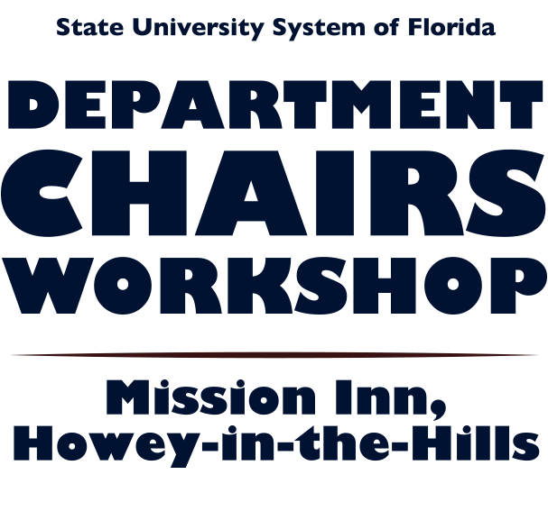

State University System of Florida, Department Chairs Workshop. Mission Inn, Howie-in-the-Hills. 
The chairs workshop is a two-session series—one session in the fall and the other in the spring. Each session has a different set of topics. The workshop is designed to be interactive and participative, rather than a lecture/listen format. Each topic to be discussed has an assigned reading period followed by small group discussion.
The purpose of these workshops is to support the development of the chair as an academic leader within the department and within the institution as a whole. The workshop is designed to stimulate discussion and enable interaction among chairs and provide an opportunity to discuss rules and procedures, legal issues, common frustrations, and many other topics of general interest.
Topics to be Covered
-
Fall
- Faculty Evaluation and Performance Counseling
- Academic Maps
- Legal Issues Facing Chairs
- Delegating and Using Committees
- Faculty Assignments
- Chair as Leader
- Conflict Resolution and Management
- Departmental Budgeting
- Teaching Effectiveness
- Departmental Missions, Goals, and Assessment
Spring
Workshop Dates
Fall: Spring:
October 4–7, 2015 June 14–17, 2015
October 2–5, 2016 May 22–25, 2016
October 1–4, 2017 June 4–7, 2017
The chairs workshops will be held at the Mission Inn, Howey-in-the-Hills, Florida. Past workshops have been held here and attendees have given us positive feedback about the hotel. For a look at the amenities, visit the Mission Inn website. For information regarding the workshops, contact Barbara Allen at (850) 644-4705, blallen@fsu.edu or Larry Abele, Director, at (850) 591-0358, labele@fsu.edu.
Workshop Attendees Since 2009